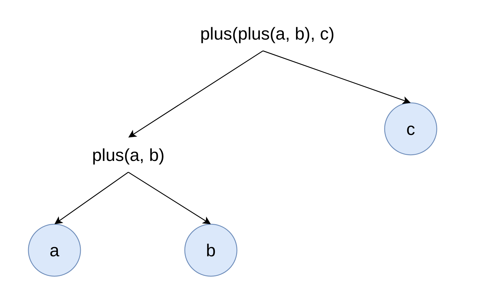

Performance improvements
For big queries or queries with a lot of JOINs there are significant performance improvements from 1.15 to 5 times.

Maksim, developer of ClickHouse.
1. Introduction.
2. ClickHouse SQL.
3. High Level architecture.
4. Analyzer.
5. Planner.
We have a lot of powerful SQL features. But when we combine them together, query analysis becomes extremely complex.
In old infrastructure there is complex internal logic based on AST rewriting.
No natural support for scoping, aliases, lambdas.
There is no specification for ClickHouse SQL extensions.
No clean separation between query Analysis and Planning.
Support for JOINs is not ideal, some features are not supported because we do not have enought semantic information (Indexes, PREWHERE).
Redesign and reimplement query analysis and planning stage.
Extension of standard SQL.
Support almost all standard SQL features. Example: Scalar/Non-scalar subqueries, JOINs, CTEs.
Support a lot of specific and useful ordinary and aggregate functions.
The most important features:
1. Aliases.
2. Arrays, ARRAY JOIN, lambdas.
3. Composite types and compound expressions.
4. Matchers.
5. Column transformers.
Standard SQL does not allow to reuse aliases in query.
In our extension aliases can be defined and reused in any part of the query.
This can lead to huge query simplification for complex queries with a lot of expressions.
SELECT 1 AS a, a;
┌─a─┬─a─┐
│ 1 │ 1 │
└───┴───┘
SELECT a, 1 AS a;
┌─a─┬─a─┐
│ 1 │ 1 │
└───┴───┘
Assume that you want to compute some complex expressions expr_1, expr_2, and use them in query:
SELECT expr_1, expr_2, expr_1 / expr_2 FROM test_table
WHERE expr_1 > 0
ORDER BY expr_2;
The only portable solution in standard SQL is to move expressions to subquery:
SELECT expr_1, expr_2, expr_1 / expr_2 FROM
(SELECT expr_1, expr_2 FROM test_table)
WHERE expr_1 > 0
ORDER BY expr_2;
Readability can be additionally improved using CTE:
WITH test_table_updated AS
(SELECT expr_1, expr_2 FROM test_table)
SELECT expr_1, expr_2, expr_1 / expr_2 FROM test_table_updated
WHERE expr_1 > 0
ORDER BY expr_2;
In ClickHouse we can just use aliases:
SELECT expr_1 AS a, expr_2 AS b, a / b FROM test_table
WHERE a > 0
ORDER BY b;
Aliases will work with any expressions:
SELECT 1 AS a, 2 AS b, a / b FROM numbers(1);
┌─a─┬─b─┬─divide(a, b)─┐
│ 1 │ 2 │ 0.5 │
└───┴───┴──────────────┘
SELECT (1 + 1) AS a, 2 AS b, a / b FROM numbers(1);
┌─a─┬─b─┬─divide(a, b)─┐
│ 2 │ 2 │ 1 │
└───┴───┴──────────────┘
SELECT (SELECT 1) AS a, (SELECT 2) AS b, a / b FROM numbers(1);
┌─a─┬─b─┬─divide(a, b)─┐
│ 1 │ 2 │ 0.5 │
└───┴───┴──────────────┘
Asssume we have some complex expression expr, and we have func_1 and func_2. And we want to reuse expr, to simplify query:
SELECT func_1(expr) / func_2(expr) FROM test_table;
Give it alias, because they can be defined in any place of the query:
SELECT func_1(expr_1 AS value) / func_2(value) FROM test_table;
Or we can reuse common expressions in WITH statement:
WITH expr_1 AS value
SELECT func_1(value) / func_2(value) FROM test_table;
ClickHouse SQL is extension on top of standard SQL. Reusing expressions in WITH does not break standard SQL CTEs:
WITH updated_test_table AS (SELECT id FROM test_table),
expr_1 AS value,
SELECT func_1(value) / func_2(value) FROM updated_test_table;
Expressions can be used in any part of the query:
SELECT number FROM numbers(10) LIMIT (SELECT 1) + (SELECT 1);
┌─number─┐
│ 0 │
│ 1 │
└────────┘
A lot of features to help work with arrays:
1. ARRAY JOIN.
2. Special functions to work with arrays.
3. Special arrayJoin function.
SELECT [1, 2, 3] AS array, arrayReduce('sum', array);
┌─array───┬─arrayReduce('sum', array)─┐
│ [1,2,3] │ 6 │
└─────────┴───────────────────────────┘
SELECT number, array_element FROM numbers(2)
ARRAY JOIN [1,2,3] AS array_element;
┌─number─┬─array_element─┐
│ 0 │ 1 │
│ 0 │ 2 │
│ 0 │ 3 │
│ 1 │ 1 │
│ 1 │ 2 │
│ 1 │ 3 │
└────────┴───────────────┘
Extract Perf metrics for specific query from query log:
SELECT PE.Names AS ProfileEventName, PE.Values AS ProfileEventValue
FROM system.query_log ARRAY JOIN ProfileEvents AS PE
WHERE query_id='344b07d9-9d7a-48f0-a17e-6f5f6f3d61f5'
AND ProfileEventName LIKE 'Perf%';
┌─ProfileEventName─────────────┬─ProfileEventValue─┐
│ PerfCpuCycles │ 40496995274 │
│ PerfInstructions │ 57259199973 │
│ PerfCacheReferences │ 2072274618 │
│ PerfCacheMisses │ 146570206 │
│ PerfBranchInstructions │ 8675194991 │
│ PerfBranchMisses │ 259531879 │
│ PerfStalledCyclesFrontend │ 813419527 │
│ PerfStalledCyclesBackend │ 15797162832 │
│ PerfCpuClock │ 10587371854 │
│ PerfTaskClock │ 10587382785 │
│ PerfContextSwitches │ 3009 │
...
│ PerfInstructionTLBReferences │ 1344998 │
│ PerfInstructionTLBMisses │ 181635 │
└──────────────────────────────┴───────────────────┘
Can be arguments to high-order functions:
SELECT arrayMap(x -> x + 1, [1, 2, 3]) AS array_map;
┌─array_map─┐
│ [2,3,4] │
└───────────┘
Can capture columns from outside scope:
SELECT number, arrayMap(x -> x + number, [1, 2, 3]) AS array_map
FROM numbers(3);
┌─number─┬─array_map─┐
│ 0 │ [1,2,3] │
│ 1 │ [2,3,4] │
│ 2 │ [3,4,5] │
└────────┴───────────┘
ClickHouse supports composite types Tuple, JSON:
CREATE TABLE points (point Tuple(x UInt64, y UInt64))
ENGINE=MergeTree ORDER BY point;
INSERT INTO points VALUES ((0, 0)), ((1, 1)), ((2, 2));
SELECT point.x, point.y FROM points;
┌─point.x─┬─point.y─┐
│ 0 │ 0 │
│ 1 │ 1 │
│ 2 │ 2 │
└─────────┴─────────┘
Functions can return composite types.
Function simpleLinearRegression returns coefficients k and b, of the resulting line y = k * x + b:
SELECT simpleLinearRegression(point.x, point.y) FROM points;
┌─simpleLinearRegression(point.x, point.y)─┐
│ (1,0) │
└──────────────────────────────────────────┘
Select all columns:
SELECT * FROM hits;
Select only specific subset of columns:
SELECT COLUMNS('ParsedParams.*') FROM hits;
SELECT COLUMNS(WatchID, UserID) FROM hits;
Apply transformations for selected columns, or remove some columns from selection:
SELECT * APPLY toString FROM hits;
SELECT * APPLY x -> toString(x) FROM hits;
SELECT * EXCEPT UserID FROM hits;
SELECT * REPLACE toString(UserID) AS UserID FROM hits;
SELECT COLUMNS('ParsedParams.*') APPLY toString FROM hits;
SELECT COLUMNS(WatchID) APPLY x -> toString(x) FROM hits;
Query analysis for our non standard SQL is extremely complex.
When so many flexible features start to work together, there are non trivial ways how you can combine them:
SELECT value_3, value AS value_2, 1 AS value_1, value_2 AS value_3;
SELECT point AS point_alias, point_alias.x FROM points;
SELECT point.x FROM (SELECT point FROM points);
SELECT point.* APPLY toString FROM points;
SELECT untuple(point) AS value_untuple, value_untuple FROM points;
Support of some features for JOINs was not ideal:
1. Multiple JOINs are rewritten into subqueries. These lead to name clashing, missing aliases, and a lot of missing optimizations.
2. Indexes does not work for JOINs (KeyCondition, Skipping Indexes).
3. PREWHERE does not work for JOINs.
4. FINAL, SAMPLE BY does not work for JOINs.
1. Analysis infrastructure is responsible for query analysis stage. Input is AST output is QueryTree.
2. Planner is responsible for query planning. Input is QueryTree output is QueryPlan.
3. Most optimizations are done on query plan level. Input is QueryPlan output is QueryPipeline.
Query Tree data structure:
1. Contains all semantic information that is necessary to execute query.
2. Interface between Analyzer and Planner.
3. Build from AST.
4. Can be converted back to valid AST.
Query Tree has following nodes:
1. Identifier.
2. Matchers (Asterisk, COLUMNS). Column transformers.
3. Constants.
4. Functions. Lambdas.
5. Table Expressions (Query, Union, Table, Table Function, JOIN, ARRAY JOIN).
6. Columns. Each column contain pointer its source (Lambda, Table expression).
Infrastructure is build around passes (IQueryTreePass). Inspired by LLVM.
QueryAnalysis is first and the most important pass.
We should create new passes only if optimization or feature is impossible or inconvenient to implement on top of query plan.
Example of good passes are predicate rewrite, some aggregate functions optimizations.
Introspection is done with EXPLAIN QUERY TREE system query.
Query analysis pass is responsible for query analysis and validation.
All identifier and matcher nodes are resolved.
All functions, lambdas are resolved. Constant folding is performed.
All subqueries are resolved. Constant folding is performed if needed.
Projection columns are calculated for Query node.
Query is validated.
EXPLAIN QUERY TREE run_passes = 0 SELECT id, value FROM test_table;
┌─explain──────────────────────────────────────┐
│ QUERY id: 0 │
│ PROJECTION │
│ LIST id: 1, nodes: 2 │
│ IDENTIFIER id: 2, identifier: id │
│ IDENTIFIER id: 3, identifier: value │
│ JOIN TREE │
│ IDENTIFIER id: 4, identifier: test_table │
└──────────────────────────────────────────────┘
EXPLAIN QUERY TREE run_passes = 1 SELECT id, value FROM test_table;
┌─explain───────────────────────────────────────────────────────────────────┐
│ QUERY id: 0 │
│ PROJECTION COLUMNS │
│ id UInt64 │
│ value String │
│ PROJECTION │
│ LIST id: 1, nodes: 2 │
│ COLUMN id: 2, column_name: id, result_type: UInt64, source_id: 3 │
│ COLUMN id: 4, column_name: value, result_type: String, source_id: 3 │
│ JOIN TREE │
│ TABLE id: 3, table_name: default.test_table │
└───────────────────────────────────────────────────────────────────────────┘
EXPLAIN QUERY TREE dump_ast = 1 SELECT id, value FROM test_table;
┌─explain───────────────────────────────────────────────────────────────────┐
│ QUERY id: 0 │
│ PROJECTION COLUMNS │
│ id UInt64 │
│ value String │
│ PROJECTION │
│ LIST id: 1, nodes: 2 │
│ COLUMN id: 2, column_name: id, result_type: UInt64, source_id: 3 │
│ COLUMN id: 4, column_name: value, result_type: String, source_id: 3 │
│ JOIN TREE │
│ TABLE id: 3, table_name: default.test_table │
│ │
│ SELECT │
│ default.test_table.id AS id, │
│ default.test_table.value AS value │
│ FROM default.test_table │
└───────────────────────────────────────────────────────────────────────────┘
EXPLAIN QUERY TREE SELECT arrayMap(x -> x, [1]) FROM test_table;
┌─explain───────────────────────────────────────────────────────────────────────────────────────────┐
│ QUERY id: 0 │
│ PROJECTION COLUMNS │
│ arrayMap(lambda(tuple(x), x), [1]) Array(UInt8) │
│ PROJECTION │
│ LIST id: 1, nodes: 1 │
│ FUNCTION id: 2, function_name: arrayMap, function_type: ordinary, result_type: Array(UInt8) │
│ ARGUMENTS │
│ LIST id: 3, nodes: 2 │
│ LAMBDA id: 4 │
│ ARGUMENTS │
│ LIST id: 5, nodes: 1 │
│ COLUMN id: 6, column_name: x, result_type: UInt8, source_id: 4 │
│ EXPRESSION │
│ COLUMN id: 6, column_name: x, result_type: UInt8, source_id: 4 │
│ CONSTANT id: 7, constant_value: Array_[UInt64_1], constant_value_type: Array(UInt8) │
│ JOIN TREE │
│ TABLE id: 8, table_name: default.test_table │
└───────────────────────────────────────────────────────────────────────────────────────────────────┘
EXPLAIN QUERY TREE dump_passes = 1 SELECT id, value FROM test_table;
┌─explain───────────────────────────────────────────────────────────────────┐
│ Pass 1 QueryAnalysis - Resolve type for each query expression. ... │
│ Pass 2 FunctionToSubcolumns - Rewrite function to subcolumns, ... │
│ Pass 3 CountDistinct - Optimize single countDistinct into ... │
│ Pass 4 RewriteAggregateFunctionWithIf - Rewrite aggregate ... │
│ Pass 5 SumIfToCountIf - Rewrite sum(if) and sumIf into countIf ... │
│ ... │
│ Pass 20 ConvertOrLikeChain - Replaces all the 'or's with ... │
│ Pass 21 LogicalExpressionOptimizer - Transform equality chain ... │
│ Pass 22 GroupingFunctionsResolvePass - Resolve GROUPING ... │
│ Pass 23 AutoFinalOnQueryPass - Automatically applies final ... │
│ Pass 24 CrossToInnerJoin - Replace CROSS JOIN with INNER JOIN ... │
│ Pass 25 ShardNumColumnToFunctionPass - Rewrite _shard_num ... │
│ QUERY id: 0 │
│ PROJECTION COLUMNS │
│ id UInt64 │
│ value String │
│ PROJECTION │
│ LIST id: 1, nodes: 2 │
│ COLUMN id: 2, column_name: id, result_type: UInt64, source_id: 3 │
│ COLUMN id: 4, column_name: value, result_type: String, source_id: 3 │
│ JOIN TREE │
│ TABLE id: 3, table_name: default.test_table │
└───────────────────────────────────────────────────────────────────────────┘
Additionally new query analysis infrastructure brings a lot of new features.
Lambdas, compound expressions, matchers, column transformers are now natural part of the language.
Similar how aliases can help you reuse expressions, standalone lambdas can help you reuse functions:
WITH (x -> x + 1) AS plusOne SELECT plusOne(1)
┌─plusOne(1)─┐
│ 2 │
└────────────┘
Additionally lambdas can:
1. Take other lambdas as argument.
2. Call other lambdas.
WITH ((inner_function, argument) -> inner_function(argument)) AS evaluate
SELECT evaluate(x -> x + 1, 1) AS function_call;
┌─function_call─┐
│ 2 │
└───────────────┘
WITH ((inner_function, argument) -> inner_function(argument)) AS evaluate,
(x -> x + 1) AS plusOne
SELECT evaluate(plusOne, 1) AS function_call;
┌─function_call─┐
│ 2 │
└───────────────┘
Compound expressions can be aliased and reused as any ordinary expression:
WITH simpleLinearRegression(point.x, point.y) AS coefficients
SELECT coefficients.k, coefficients.b FROM points;
┌─coefficients.k─┬─coefficients.b─┐
│ 1 │ 0 │
└────────────────┴────────────────┘
Matchers and column transformers can be combined with compound expressions.
Extemely helpful for working with multiple nested layers, JSON type, compound expressions.
WITH cast(tuple(1, 1), 'Tuple(x UInt64, y UInt64)') AS point
SELECT point.*, point.* APPLY toString;
┌─point.x─┬─point.y─┬─toString(point.x)─┬─toString(point.y)─┐
│ 1 │ 1 │ 1 │ 1 │
└─────────┴─────────┴───────────────────┴───────────────────┘
Our old infrastructure for query analysis and planning, was too tight together. That lead to development slowdown, obscure bugs.
We decided to redesign and reimplement our query planning layer that will work with query tree.
Main goal is separation of query analysis and planning.
Because of separation of query analysis and planning. New planner is much easier to understand, because it does only one thing, make initial query plan.
Planning steps:
1. Collect table expression data. For each table expression information about columns that must be read, and mapping from column to unique identifier is performed.
2. Prepare sets for special IN function and its variations.
3. Build query plan for JOIN TREE part of query.
4. Build expression actions chain, and finalize it. This steps allows to not recompute already evaluated expressions.
5. Build other steps of query plan. (Sorting, Aggregation, Window functions).
All stages are fully documented.
Multiple ARRAY JOINS are supported.
Multiple JOINS are supported without rewriting them to subqueries.
SAMPLE BY, FINAL, indexes, PREWHERE are supported for JOINS.
Improved distributed JOINs support.
This allows to work with nested arrays hiearchies:
SELECT number, nested_array, nested_array_element FROM numbers(1)
ARRAY JOIN [[1,2,3], [4, 5]] AS nested_array
ARRAY JOIN nested_array AS nested_array_element;
┌─number─┬─nested_array─┬─nested_array_element─┐
│ 0 │ [1,2,3] │ 1 │
│ 0 │ [1,2,3] │ 2 │
│ 0 │ [1,2,3] │ 3 │
│ 0 │ [4,5] │ 4 │
│ 0 │ [4,5] │ 5 │
└────────┴──────────────┴──────────────────────┘
SAMPLE can be specified for any table expression in JOIN TREE:
SELECT t1.id, t2.id
FROM test_table_join_1 AS t1 SAMPLE 1/2
INNER JOIN test_table_join_2 AS t2 SAMPLE 1/2 ON t1.id = t2.id;
FINAL by now can be specified for any table expression in JOIN TREE:
SELECT t1.id, t2.id, t1.value, t2.value
FROM test_table_join_1 AS t1 FINAL
INNER JOIN test_table_join_2 AS t2 FINAL ON t1.id = t2.id;
Without JOINs rewriting to subqueries, now we can build better plan for distributed JOINs.
Distributed JOINs with multiple distributed tables and distributed_product_mode = local can be directly processed on shards.
On low-level expressions are represented in DAG that has input, function, constant, alias types of node. Example:
DAG is used as internal data structure.
DAG creation from query tree is simple and fast.
DAG is compact, lightweight, and it is easy to use it for indexes and low-level optimizations (Constants and prepared sets are part of DAG).
Reimplement all index analysis to ActionsDAG.
ActionsDAG is used for all indexes analysis (Key Condition, Skipping Indexes). Interfaces are refactored.
Index analysis component has interface where INPUT is predicate expression dag, key expression dag, OUTPUT is stack of RPN elements.
Key Condition, Skiping Indexes work for JOINs almost without any modifications.
For big queries or queries with a lot of JOINs there are significant performance improvements from 1.15 to 5 times.
In new infrastructure, now it is possible to:
1. Implement features that we could not do on top of old infrastructure: JOINs CBO reordering, correlated subqueries.
2. Provide better standard SQL support or compatibility with other DBMSs. Example: UNNEST, TABLESAMPLE, QUALIFY, Recursive CTE.
Thanks to Dmitry Novik, Vladimir Cherkasov, Igor Nikonov, Yakov Olkhovskiy, Smita Kulkarni, Nikolai Kochetov.
SET allow_experimental_analyzer = 1;
1. Separate of query analysis and planning, gives us ability to scale development and develop new features much faster.
2. Significant performance improvements for huge queries, or queries with multiple JOINs.
3. Improved JOINs support.
4. A lot of new features.
5. Fixed a ton of bugs, related to identifiers resolution, query planning, JOINs rewriting.